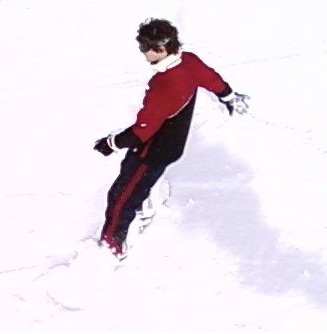

Site Information
This site was written in a variety of scripting and markup languages... primarily XHTML
and CSS. There are also a few Flash objects (the Tiltviewer and the JW player), a
few XML pages (the arguments page and the playlists for the two Flash objects), and a
good bit of PHP (used in the guestbook and survey to store information in the database).
This site also contains all original code. I did not cut or copy any of the content or scripts used on this site.
Since I hardcode this stuff, it's no meager task for me to do a big website. I've spent about 5 weeks of my life working on almost nothing but this site... I even spent Thanksgiving working on the site in order to get it done within a reasonable amount of time.
I'm also responsible for hosting this site, since it's going in my E-portfolio. So, once it's been graded for my Technical Writing Project, I will be moving it from the University of Central Florida's Eustis server to a private account I share with a friend on a Hostdime server. I'm giving this notice as a warning since the site will go down for a few hours as I move it over.
This site is an academic work. It is being created for my ENC3241 Technical Writing class as well as my CIS4004 Web Based Information Technologies class.
 This site is a student work, and as such, I will not be able to spend every waking
minute making sure people don't leave inappropriate messages in the guest book. I WILL
update the site, but it will take a back seat to my studies, my job, and especially my
girlfriend.
This site is a student work, and as such, I will not be able to spend every waking
minute making sure people don't leave inappropriate messages in the guest book. I WILL
update the site, but it will take a back seat to my studies, my job, and especially my
girlfriend.
I've written the website with the intention of being cross-browser while retaining all of the pretty effects you'd have if you switched to Google Chrome. But since Internet Explorer and Firefox don't officially support CSS3, some of the site's effects might not function perfectly. So if you want to see this site in its full glory, get Chrome!
This site also contains all original code. I did not cut or copy any of the content or scripts used on this site.
Since I hardcode this stuff, it's no meager task for me to do a big website. I've spent about 5 weeks of my life working on almost nothing but this site... I even spent Thanksgiving working on the site in order to get it done within a reasonable amount of time.
I'm also responsible for hosting this site, since it's going in my E-portfolio. So, once it's been graded for my Technical Writing Project, I will be moving it from the University of Central Florida's Eustis server to a private account I share with a friend on a Hostdime server. I'm giving this notice as a warning since the site will go down for a few hours as I move it over.
This site is an academic work. It is being created for my ENC3241 Technical Writing class as well as my CIS4004 Web Based Information Technologies class.
This site is a student work, and as such, I will not be able to spend every waking
minute making sure people don't leave inappropriate messages in the guest book. I WILL
update the site, but it will take a back seat to my studies, my job, and especially my
girlfriend.
I've written the website with the intention of being cross-browser while retaining all of the pretty effects you'd have if you switched to Google Chrome. But since Internet Explorer and Firefox don't officially support CSS3, some of the site's effects might not function perfectly. So if you want to see this site in its full glory, get Chrome!
About the Author

My name is Roscoe Pyell and. I am a student at the University of Central
Florida and, at the time of this website's publication, a senior in the Information
Technologies program.
This is the third website I've written for my Web Based IT class and I'm also expanding upon the original site and using if for my Technical Writing class. I've also put a lot of work into coding it. As such, there may be bugs. If there appears to be content missing or content is not displaying 'correctly' for you, send me a message and I'll try to take care of it the next time I update the site.
You may also be asking yourself why there's a picture of me snowboarding off to the left there... truth be told, I ran out of pictures of myself after putting that one up on my e-portfolio. I'm just not that big into getting my picture taken.
This is the third website I've written for my Web Based IT class and I'm also expanding upon the original site and using if for my Technical Writing class. I've also put a lot of work into coding it. As such, there may be bugs. If there appears to be content missing or content is not displaying 'correctly' for you, send me a message and I'll try to take care of it the next time I update the site.
You may also be asking yourself why there's a picture of me snowboarding off to the left there... truth be told, I ran out of pictures of myself after putting that one up on my e-portfolio. I'm just not that big into getting my picture taken.